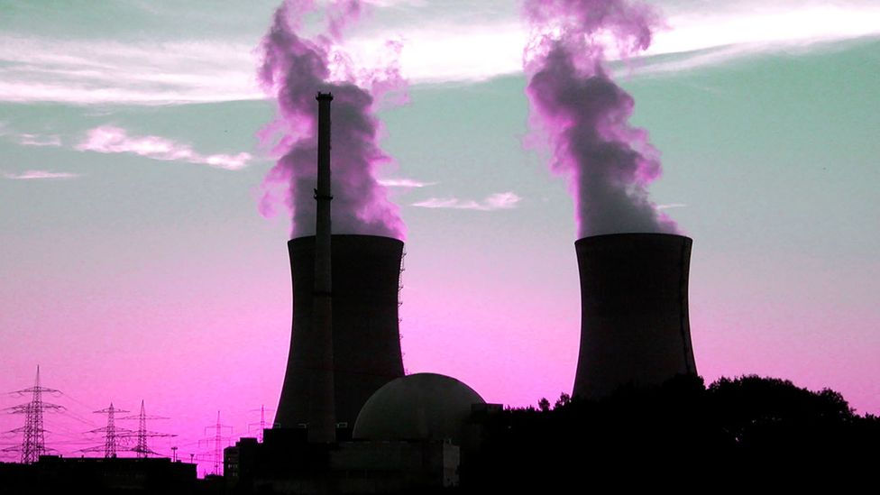

ENERGÍA NUCLEAR
La energía nuclear es la energía que se libera como consecuencia de la reacción que se produce cuando se dividen los núcleos atómicos pesados. Ésta es también denominada Fisión Nuclear. Como resultado de este proceso se generan grandes cantidades de calor que son aprovechadas para producir vapor a presión, lo que permite obtener energía mecánica para poner en funcionamiento generadores de energía eléctrica.